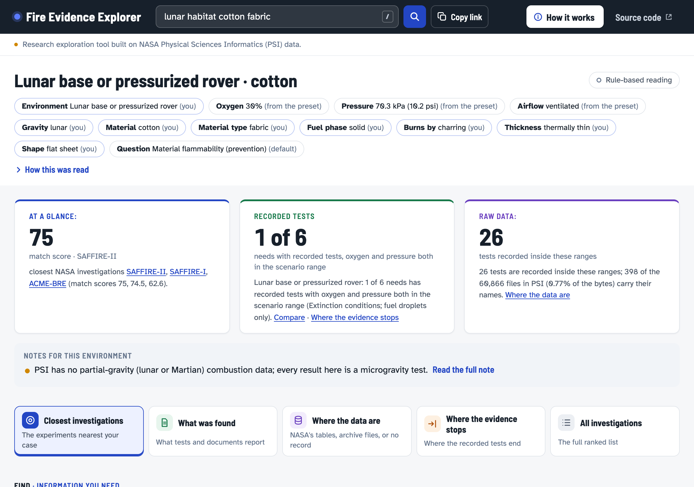

Product
Fire Evidence Explorer
Team
RAPID
Type what you build and where. See the closest NASA investigations, what their recorded tests hold for six fire-safety questions, where the data are, and where the evidence stops.
Public page, opens without a login
choidol0208.github.io/NASA_RAPID/Try the example "Lunar habitat, cotton fabric".

The dashboard for "Lunar habitat, cotton fabric": the input as read, three key figures, five tabs. Capture of the team's own page, 15 November 2026; not AI-generated.